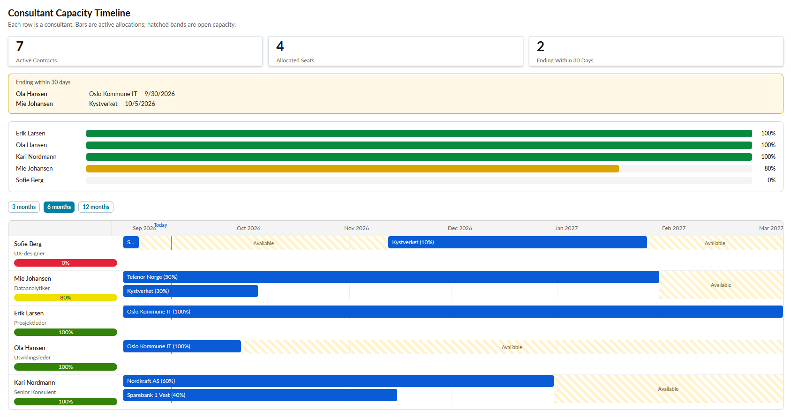

Gjennom høstsemesteret hos KPMG jobber jeg og Einar med to sammenhengende prosjekter innenfor ServiceNow-utvikling, der hovedfokuset vårt er å utforske og dokumentere hvordan AI-verktøyet Claude Code kan brukes i utviklingsprosessen på plattformen.
Hovedprosjekt
Metodikk for bruk av Claude Code i ServiceNow-utvikling
Det primære leveransen vår er dokumentasjon av beste praksis for hvordan Claude Code kan integreres i en ServiceNow-utviklingssyklus (SDLC). Vi undersøker dette langs fire akser: prompting-strategi, kontekststyring, arbeidsflyt og kvalitetskontroll. Målet er å produsere praktisk anvendelig veiledning som kan brukes av andre utviklere i lignende prosjekter, ikke bare et engangsfunn fra vårt eget prosjekt.
Vi samler funnene fortløpende i et eget dokumentasjons-repo (claude-code-sdlc-methodology), strukturert etter de fire aksene. Hvert eksperiment vi gjennomfører logges systematisk med hvilken prompt som ble brukt, hvilken kontekst Claude Code hadde tilgjengelig, hva resultatet ble, og hvilke manuelle korreksjoner som var nødvendige. Denne systematiske tilnærmingen gjør at vi kan sammenligne ulike metoder objektivt, i stedet for å basere konklusjoner på enkeltinntrykk.
Claude CodeServiceNow SDKGitHub
Støtteprosjekt
Applikasjon for ressursallokering
For å ha et konkret og realistisk case å teste metodikken på, bygger vi parallelt en ServiceNow-applikasjon for ressursallokering. Dette prosjektet er i seg selv ikke hovedmålet — det fungerer som et testmiljø der vi kan gjenskape samme applikasjon flere ganger med ulike tilnærminger til Claude Code, for å produsere sammenlignbare funn til metodikk-dokumentasjonen. Vi eksperimenterer blant annet med å koble applikasjonen til et eget kildekode-repo via ServiceNow sin Source Control-modul, slik at Claude Code kan jobbe med applikasjonskoden lokalt før endringene importeres tilbake til instansen.
dev.service-now.com/now/resource-allocation

ServiceNow StudioSource ControlApp Engine
Læringsutbytte
Kombinasjonen av de to prosjektene gir oss praktisk erfaring med sentrale deler av ServiceNow-utvikling — blant annet scoped applications, Studio, Source Control-integrasjon og applikasjonsarkitektur — samtidig som vi opparbeider oss en mer overordnet forståelse av hvordan AI-assisterte utviklingsverktøy best kan tas i bruk i en strukturert utviklingsprosess. Vi anser dette som spesielt relevant erfaring, både fordi ServiceNow-utvikling er en direkte overførbar ferdighet, og fordi metodikken vi dokumenterer rundt AI-assistert utvikling er et område i rask utvikling som blir stadig mer relevant i konsulentbransjen.
Scoped appsUI BuilderNow Assist
Metodikk
Fire akser vi undersøker
01
Prompting-strategi
Hvordan vi formulerer oppgaven: språk, struktur og tydelige krav i en spesifikasjon.
02
Kontekststyring
Hvor mye Claude trenger å vite for å forstå nok, uten at vi deler hele prosjektet.
03
Arbeidsflyt
Hvordan Claude Code, Studio, Source Control og UI Builder henger sammen.
04
Kvalitetskontroll
Faste testoppskrifter, kjøringer mot kravene og manuelle korreksjoner.
Flow Designer
Slik bygger vi med KI
Oppskriften vi har landet på så langt, tegnet som en flyt i ServiceNow.
KI-assistert app-utviklingAktiv
⚡
Trigger: ny oppgave eller endringEt behov i ressursallokerings-appen
Trigger
1
Skriv spesifikasjonKrav og begrensninger i et eget dokument
Prompting
2
Claude Code bygger komponenterÉn komponent om gangen, ikke hele siden
Claude Code
3
Synk til instansenVia Source Control og ServiceNow SDK til PDI
Source Control
4
Sett sammen i UI BuilderKomponentene kan flyttes og endres fritt
UI Builder
5
Test mot kraveneFaste testoppskrifter, så testene kan gjentas likt
Test
6
Logg funnenePrompt, kontekst, resultat og manuelle korreksjoner
GitHub
Listevisning
Eksperimentlogg
Et utvalg av eksperimentene fra dagboken, samlet slik en liste ser ut i ServiceNow.
EksperimenterAlle > Sortert etter uke9 records
Nummer
Eksperiment
Akse
Uke
Funn
Status
EXP0001001
Claude Code vs. Now Assist
Arbeidsflyt
36
Hva fungerer best til ulike formål
Logget
EXP0001002
Norsk vs. engelsk prompt
Prompting
37
Hvordan språket påvirker svarene fra Claude
Logget
EXP0001003
Komponenter i stedet for hel side
Arbeidsflyt
39
Lettere å flytte og endre i UI Builder
Logget
EXP0001004
Kjøringer etter spesifikke krav
Prompting
40–42
Resultatene varierer med kravene vi setter
Logget
EXP0001005
AIUX og Lux
Arbeidsflyt
43
Enkelt å utvikle i, men gamle oppsett må endres
Logget
EXP0001006
Stor vs. liten modell
Kvalitet
44
Stor: bedre på avansert kode. Liten: raskere og billigere